Modulo 5
Comandos del terminal de Linux
Comandos
14-05-2022
El terminal de Linux
El terminal de Linux al igual que la consola de Windows es una ventana donde se puede controlar al sistema operativo por un medio no gráfico, por medio de scripts. A diferencia de Windows Linux es un OS de código abierto, por lo que su terminal es el mas usado para para actualizar programas, instalarlos, entro otras cosas, dándonos un control de personalización de nuestros programas, archivo y demás aplicación. Siendo prácticamente este, el principal atractivo de Linux, por lo su manejo es indispensable para saber sacarle el provecho deseado, debido a eso se mostrara algunos de los comando básicos que son posible ejecutar en el terminal.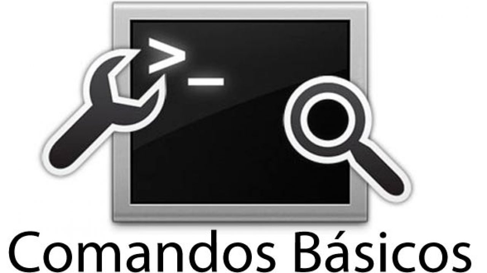
Sudo su
Sirve para pasar a ser administrador dentro del terminal, solo se debe poner la contraseña del usuario administrador.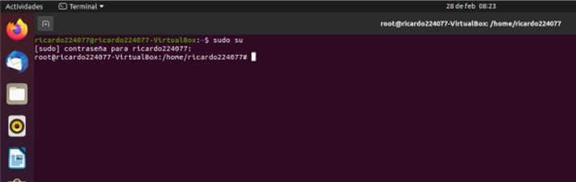
Pwd
Sirve para saber en qué directorio o fichero nos encontramos en ese momento, desplegándonos las dirección completa del directorio.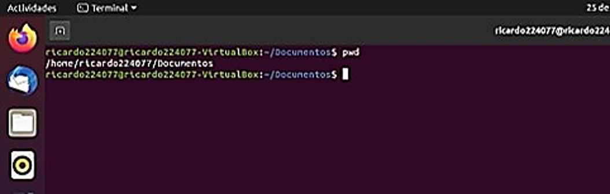
Ls
Sirve para ver el contenido del directorio actual (archivo, programas, etc).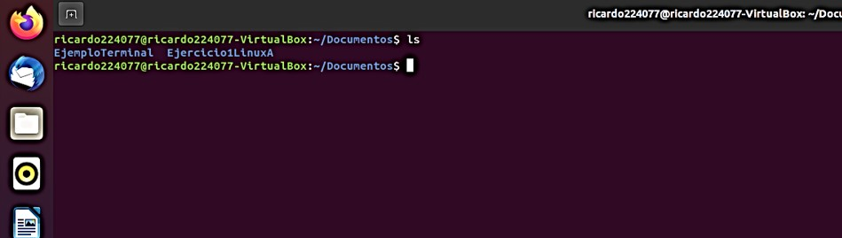
Tree
Sirve para ver el contenido de los directorios en forma de mapa.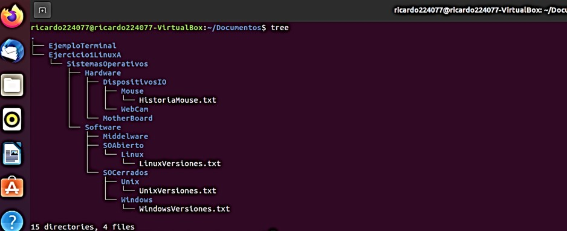
Cd/cd
Sirve para entrar y salir de los directorios.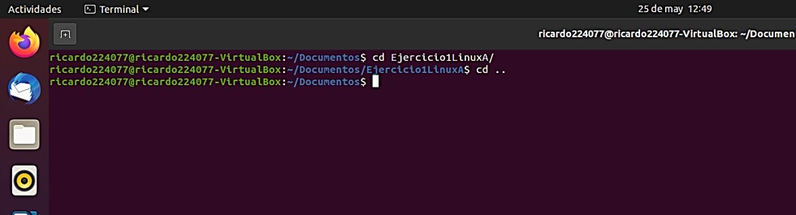
Mkdir
Sirve para crear un directorio.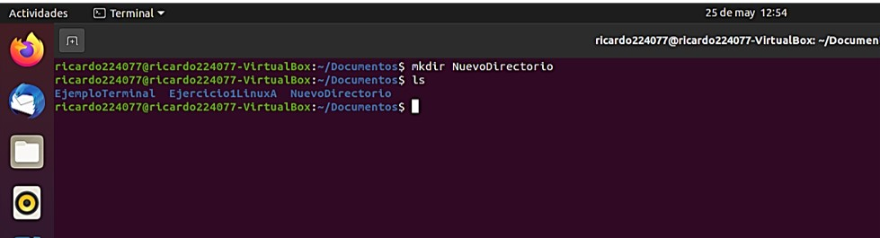
Rmdir / rm -r
Sirve para borrar directorios y archivos, pero la diferencia entre ambos es que rmdir solo puede borrar directorios vacíos, en cambio, rm –r puede forzar el borrado de cualquier directorio.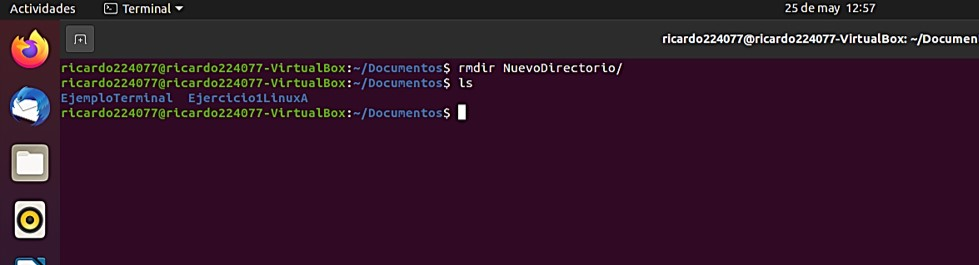
Cat
Este comando sirve para crear archivo, agregarle contenido y ver dicho contenido.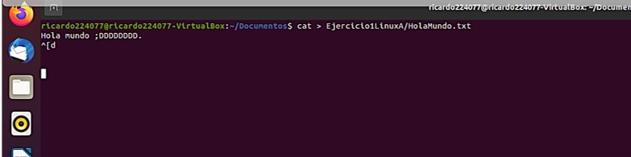
Mv
Este sirve para mover un archivo y directorio a otro directorio, y también se puede renombrar desde este comando.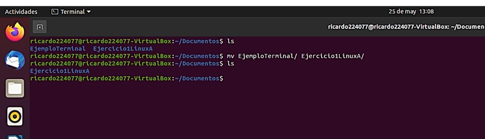
Clear
Borra todo el contenido del terminal.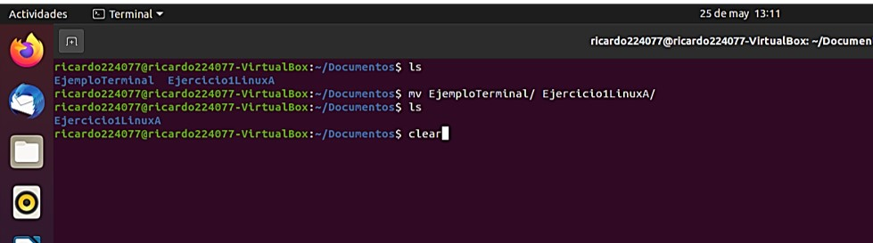
Si desea saber mas sobre los comandos del terminal de Linux, puede visistar la siguiente pagina.
Actividades del Modulo
|

© 2022 Grupo5
© Derechos reservados